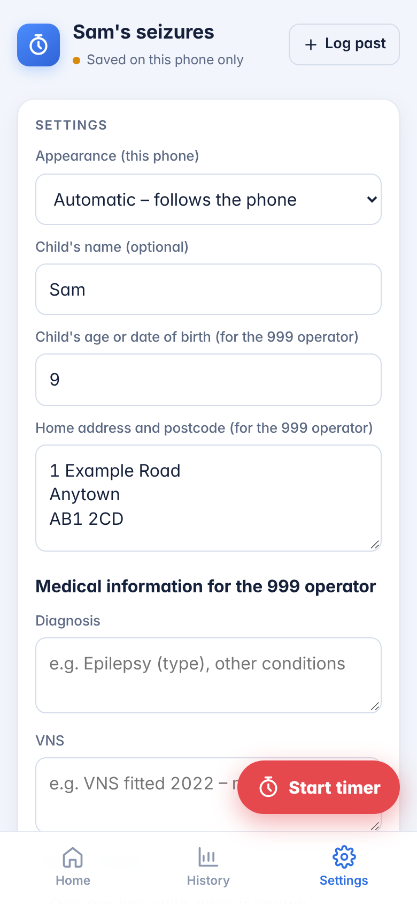
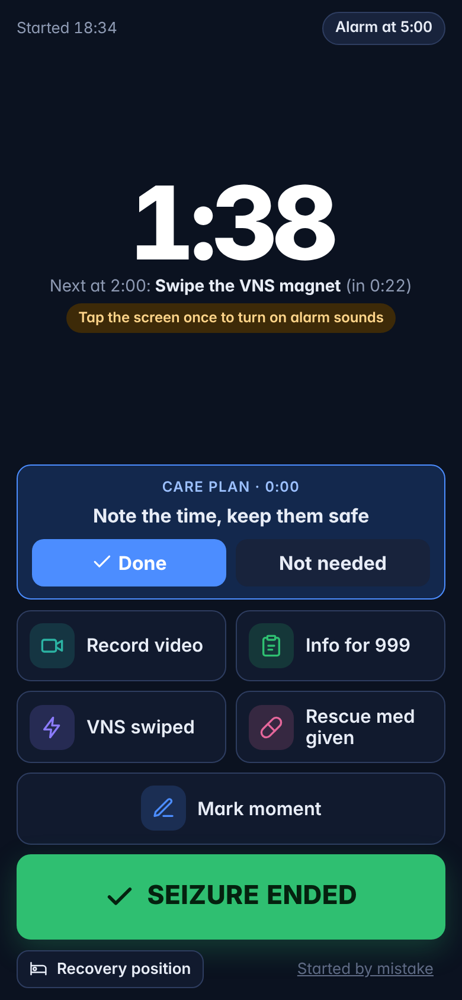
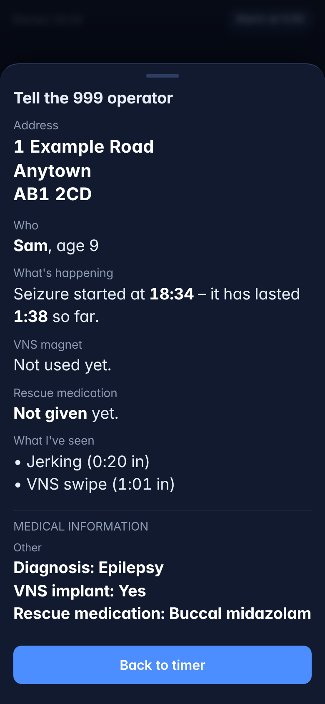
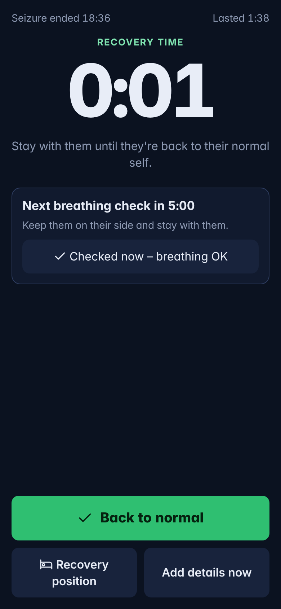
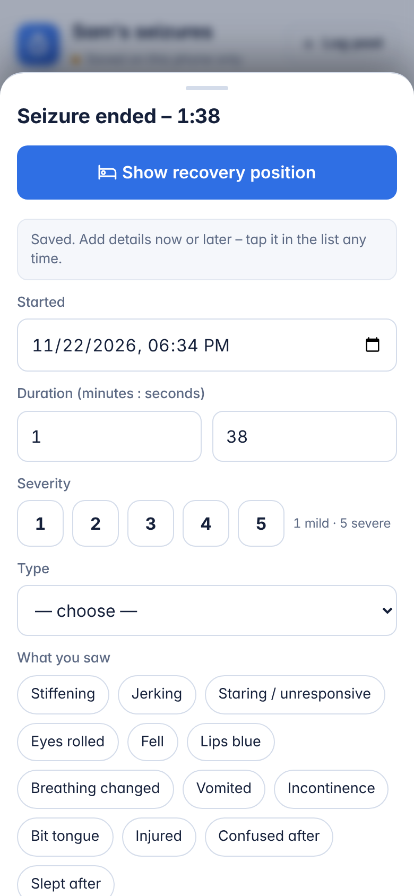
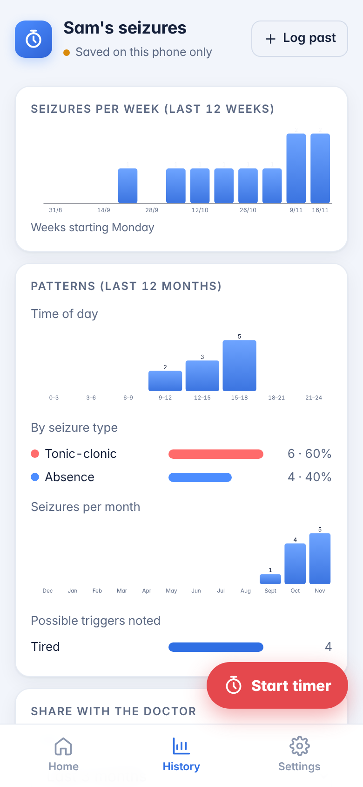
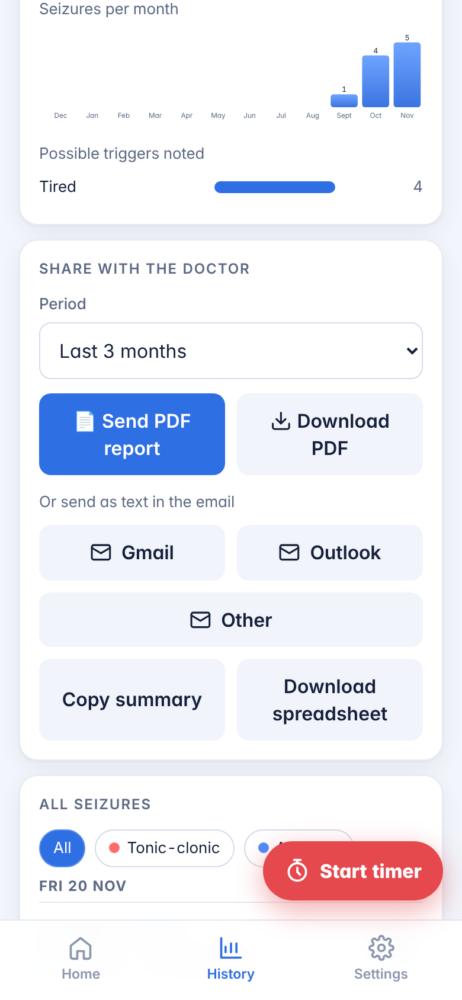

Seizure Tracker helps you time a seizure, follow the care plan and keep an accurate record – then share that record with the people who need it.
⏱ Emergency timerLarge clock, alarm at the time in the care plan, step-by-step prompts.
📞 Info for 999Everything the operator needs, ready to read out.
📝 Accurate logWhat you saw, VNS, rescue medication and video – filled in as you go.
👥 Shared with the teamFamily, carers and school see the same log, live.
Always follow the care plan and call 999 in an emergency.The app supports you; it doesn't replace medical advice or the care plan from your child's medical team.
2Install it on your phone
There's nothing to download from an app store. You add it to your home screen from the web, and it then opens full screen like any other app.
Android (Chrome)
Open Chrome and go to jamie1056-alt.github.io/seizure-tracker
Tap the ⋮ menu, then Add to home screen → Install.
Open Seizure Tracker from your home screen.
iPhone (Safari)
Open the same address in Safari.
Tap the Share button, then Add to Home Screen → Add.
Shortcut for emergenciesOn Android, press and hold the app icon and choose Start seizure timer – it opens straight into the timer. You can drag that shortcut onto your home screen too.
3First time you open it
You'll be asked how you'd like to keep the log. You can change your mind later.
Choice
Best for
Use on this phone only
A single family phone. Nothing leaves the phone. Download a backup now and then from Settings → Backup.
Sign in (Google or email link)
Backing up safely and sharing with others. Needed if more than one person logs seizures.
When you sign in for the first time you'll set up a child: enter a name (initials are fine) and, if you like, age or date of birth. If you were already using the app, keep "Copy the seizures already saved on this phone" ticked so nothing is lost. You become the child's lead carer.
Been sent an invite link?Don't set up a child – just open the link and sign in. You'll join the existing team. See section 9.
4Set up the care plan
Go to Settings and fill in as much as you can, then tap Save settings. A lead carer does this once; everyone in the team then sees it.
Child's name, age and home address – shown on the 999 card.
Medical information – diagnosis, VNS, rescue medication, allergies.
Emergency contacts.
Alarm time – when the alarm should sound (for example 5 minutes, as in the care plan).
Care plan steps – what to do and when, e.g. "2:00 swipe the VNS magnet", "5:00 give rescue medication". The timer prompts you at each one.
VNS – the gap between swipes and the maximum number.
Recovery checks – how often to be reminded to check breathing.
Doctor's email.
The Seizure passport in Settings turns all of this into a one-page summary for school, a babysitter or a hospital visit.

Settings
5During a seizure

The emergency timer
Tap the big red Seizure started button on the Home screen – or Start timer on any other screen.
Tap the screen once to switch on alarm sounds (phones need a tap before they'll play sound).
Follow the care plan prompts as they appear and tap Done or Not needed.
Use the buttons to record what happens – each is time-stamped:
Record video – films with the seizure clock shown on the video.
VNS swiped – starts the swipe timer and reminds you when the next swipe is due, up to the maximum.
Rescue med given
Mark moment – tap everything you can see (jerking, staring, lips blue…). These are filled into the record for you afterwards.
When the alarm time is reached the alarm sounds. Silence alarm appears only once it's ringing.
When it stops, tap Seizure ended.
Started it by mistake? Tap Started by mistake at the bottom – nothing is saved.
Calling 999
Tap Info for 999. It shows the address, the child's age, how long the seizure has lasted, VNS and rescue medication given, what you've seen and the medical information – in large text, ready to read to the operator. It keeps updating while it's open.
Tip for Samsung phonesSet up Emergency SOS in the phone's Settings (Safety and emergency). Pressing the side key quickly several times then calls 999 and shares your location.

Info for 999
6After a seizure

Recovery timer
The recovery timer starts straight away and reminds you to check breathing at the interval set in Settings. Recovery position shows a diagram and steps.
Tap Back to normal when they've recovered – the recovery time is saved.
Then tap Add details now (or later, from the list). The record is already filled in with the time, length, VNS swipes, rescue medication and everything you marked. Add:
Severity (1 mild – 5 severe) and type
Anything else you saw, possible triggers and notes
Tap Save. Everyone in the team sees it straight away.
Missed the timer?
Use + Log past at the top of the Home screen to record a seizure afterwards, with the time it started and roughly how long it lasted.

The record, pre-filled
7History and patterns
The Home screen shows seizure-free days, the best streak and the last 30 days at a glance.
History shows:
Seizures per week and per month
Patterns – time of day, type and possible triggers
Every seizure, grouped by day and colour-coded by type. Tap one to see or edit it, or to watch its video.
Each entry shows who logged it, so you always know whether it came from home, school or a carer.

History
8Send a report to the doctor

History → Share with the doctor
Go to History and scroll to Share with the doctor.
Choose the period (last 30 days, 3 months, etc.).
Tap Send PDF report and choose Gmail or your email app.
The email opens with a professional PDF attached – a summary table and a table of every seizure. Add the doctor's address and send.
Download PDF saves it to the phone instead, for printing or taking to an appointment. Download spreadsheet gives the full record for Excel.
VideosVideo clips stay on the phone that recorded them and are never uploaded. The report says how many clips exist so the doctor can ask to see them.
9Share with your team
Signed-in users can invite other people to the child's log. Everyone uses their own login, and the lead carer decides what each person can do.
Role
Can do
Typical for
Lead carer
Everything, including the care plan, settings and inviting or removing people
Parents
Carer
Log seizures and edit any entry
Family, regular carers
Logger
Log seizures; edit their own entries for 24 hours
School, clubs, respite
Viewer
Read only
School nurse, specialist nurse
Invite someone (lead carer)
Go to Settings → People.
Under Invite someone, choose what they can do.
Tap Create invite link, then Share it by text, WhatsApp or email.
Each link works once and expires after 7 days.
Join a team (the person invited)
Open the link on your phone and install the app (section 2).
Sign in with Google or your email address.
You'll see the child's log straight away – there's nothing else to set up.
Looking after more than one child?
Carers can belong to several children's teams. When you belong to more than one, a child switcher appears at the top, and Seizure started asks which child first – so a seizure is never logged against the wrong child.
Lead carers can change someone's role or remove them at any time from Settings → People, and can see a history of changes.
10Privacy and security
Phone only: the log never leaves the phone.
Signed in: the log is stored securely in Google's London data centre, encrypted in transit and at rest.
Only people the lead carer has invited can see a child's log – this is enforced on the server, not just in the app.
Videos are never uploaded; they stay on the phone that recorded them.
Signing out removes the shared copy from that phone.
Use a first name or initials for the child if you prefer.
11Tips and troubleshooting
If…
Try this
The alarm didn't make a sound
Tap the timer screen once after starting, and check the phone isn't on silent. Keep the timer on screen during a seizure.
You want the latest version
Close the app fully (swipe it away) and open it again while you have signal.
No signal
Everything still works. Entries are saved on the phone and sync when signal returns.
The email or camera doesn't open
Make sure you're using the installed app or Chrome/Safari – not a link opened inside another app.
An invite link says it's used or expired
Ask the lead carer for a new one.
Practise
Start the timer, tap a few buttons and then Started by mistake – nothing is saved.